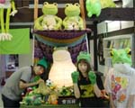
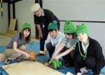
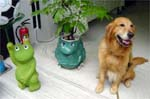
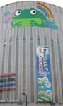
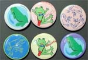

カエル展かえる山完成！  【福岡発福岡かえる展４実行委員会】１日と２日の二日間。エンジョイスペース大名で、福岡かえる展の設営作業が行われました。蓮かえる実行委員長の指導のもと、完成したカエル飾り山は、高さ３メートル幅１、５メートルで、中央にかえる寺に奉納した、『かえる大明神』が鎮座しています。
かえる展開幕は６月６日！ 今年の会期は６月６日から９日までの４日間です。設営するものの、開場するのは、６日からというわけなのです。おまちがいのないように！当日はさらに、かえる喫茶が登場したり、恒例の大名かえるお絵描き展もあります。遊びに来てねーっ！！ ヨドバシカメラがかえる化！【大阪発けろけろ同志記者】ＪＲ大阪駅前を歩きながらふと見上げると「ヨドバシカメラ・マルチメディア梅田店」に「ヨドバシカメラで快適・さわやか生活キックオフセール開催中」とかで「安くカエル」「楽しくカエル」「一緒にカエル」・・・の文字とカエルきゃらが。「おっ。とうとうヨドバシカメラもカエル化したなっ。。」とそのまま突き進んでいくと、巨大カエルペイントがあるではありませんかぁぁぁ。しかも一番目立つところに！！。うれしいやらびっくりするやら。。早速デジカメでゲットしました。
けろけろ同志記者直筆署名
(●)(●)
( o )
u ( ) u
U U
 福岡かえる展４にカエルカンバッチ！【日本発ｋｅｒｏｙａｎ同志記者】今年もカエル展に遊びに行こうと思っています。
今回私も何かしら協力（参加）したく、「カンバッチ」を作ってみました。”缶バッチをつくるおもちゃ”で作ったので、普通のカンバッチなのですが、それを持って行きたいと思っています。
投稿採用者に武功カエル徽章を授与！ |

かえる古新聞過去に取り上げた記事を見出し付きで一覧したい人は、ここをクリック◆創刊号を見る◆先週号を見る◆話題の号を見る◆かえる新聞の昔を読む
|
私も入っています。。全国かえる奉賛会
大王様に会うには、このバナーをクリック。ずっと奥に写真館があるぞ。全国かえる奉賛会に入会するには、自分のホームページのどこかに、下の部分を追加するとバナーがリンク付きで表示されるぞ。どんどん入会しましょー |


|